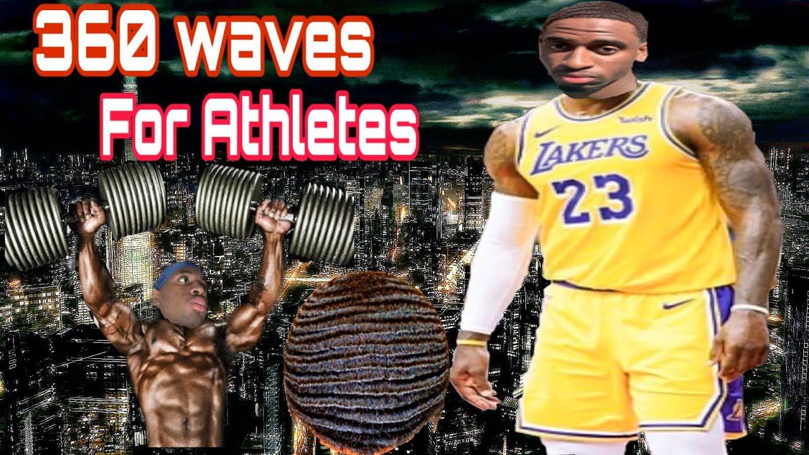

The Athlete's Wave Routine: Sweat, Helmets and Training Camp Proof
Athletes are told to pick: the season or the pattern. Sweat floods the hair daily, helmets and caps crush it for hours, and training schedules eat the time routines live on. Seamade KJ (@seamadekj1683) covers athlete wave maintenance in the video below, and the honest answer is that sport does not kill waves — unmanaged sport does. This is the management system: before, during and after training, plus the weekly structure that keeps a pattern alive through a full season.
Before and during training
Train in a cap, not bare-headed. A wave cap or a mesh durag under your helmet, headband or training cap does three jobs: it holds the pattern flat against sweat-loosened hair, it keeps helmet padding from grinding directly across your waves, and it absorbs the first wave of sweat before your hair does. Mesh earns its keep here — it breathes through a session where a silky would cook.
For sports with helmets, put the cap on in the locker room as part of getting dressed, and size your helmet with the cap on. A helmet fitted to bare hair will shift and grind all game; a helmet fitted over your cap sits stable — and a stable helmet is pattern protection no product can match.
After training: the recovery sequence
Sweat left to dry in waves is salt, oil and itch — and the scratching that follows is pattern damage. Rinse after hard sessions even when you cannot fully wash: a water-only rinse or a co-wash resets the scalp without stripping the hair, then brush the pattern back into place while damp and tie up for at least an hour. That post-training hour of compression is the athlete's substitute for the office worker's calm evening routine.
Full wash-and-style still happens once or twice a week, scheduled after the hardest training day rather than before it. And keep a complete second kit — brush, cap, durag — living in your gym bag or locker. The sessions you miss are never the planned ones; they are the ones your gear was not there for.
Season structure and honest trade-offs
Build depth in the off-season and defend it in-season. The off-season is for long wolfs and aggressive training; in-season, shift to maintenance mode — shorter sessions, constant protection, faster recovery — and accept a pattern that holds at ninety percent rather than peaking. Trying to wolf deeply through a two-a-day camp is how athletes lose both the wolf and the pattern.
Cut with the competitive calendar: a fresh cut right before the season's biggest stretch, then maintenance trims only. Athletes who run this system discover the secret the culture already knows: the discipline transfers. The same consistency that keeps waves through a season is the consistency that built them in the first place.
Watch: Seamade KJ's athlete tips — maintaining 360 waves while working out, straight from training life
Video: “How To Maintain 360 Waves While Working Out! Quick Tips For Athletes” by Seamade KJ (@seamadekj1683) · Watch on YouTube
Shop the gear
Everything in this guide runs on the right gear: a durag that holds compression without slipping, a cap that stays put, and fabric that treats your hair right. The durag.store launch lineup is built to that standard — dual-layer construction, long tails, and stitching made to survive the routine. Join the launch list and use code GOLDSTANDARD for 15% off your first order.
Keep learning
- The Nighttime Routine for Waves: 10 Minutes That Protect 24 Hours — Basic · Routines
- The Morning Routine for Waves: Untie, Lift, and Go — Intermediate · Routines
- Waves at the Gym: Training Hard Without Losing the Pattern — Basic · Routines
Sources: Video — “How To Maintain 360 Waves While Working Out! Quick Tips For Athletes” by Seamade KJ (@seamadekj1683), youtube.com. Guide written by the durag.store Wave Lab.